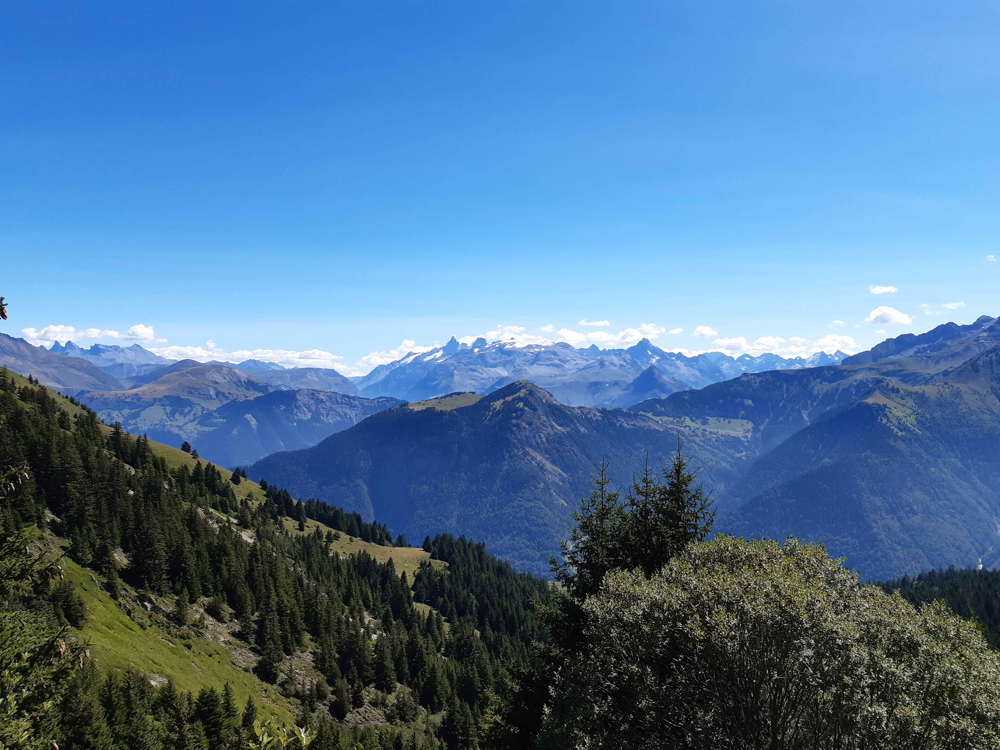
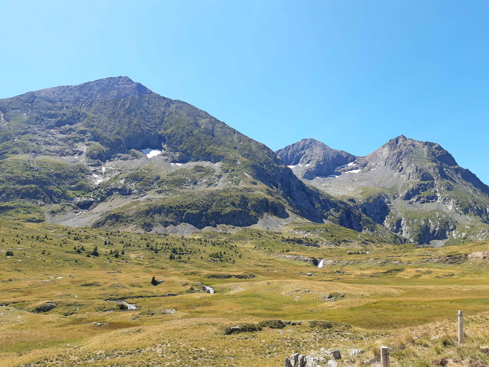
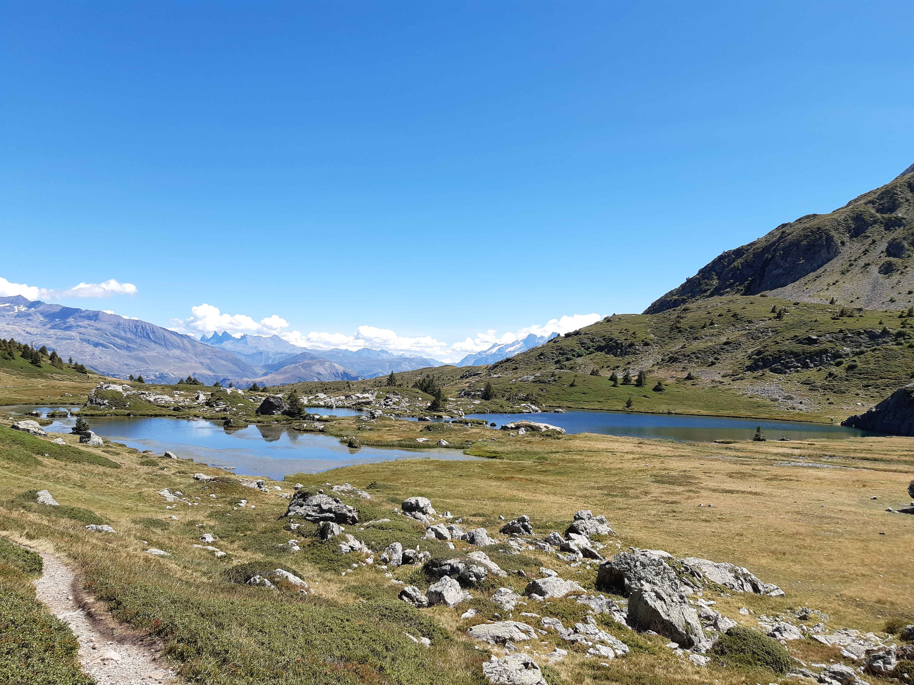
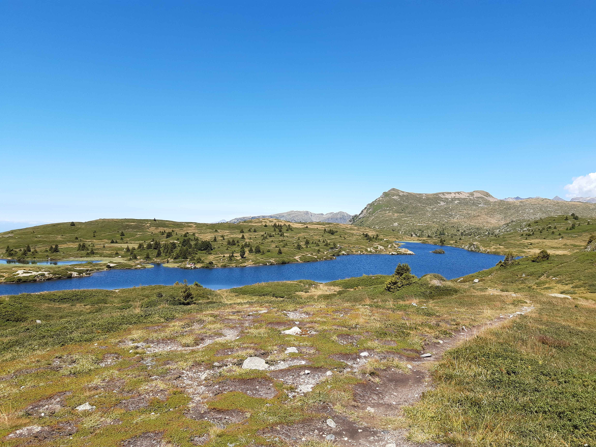
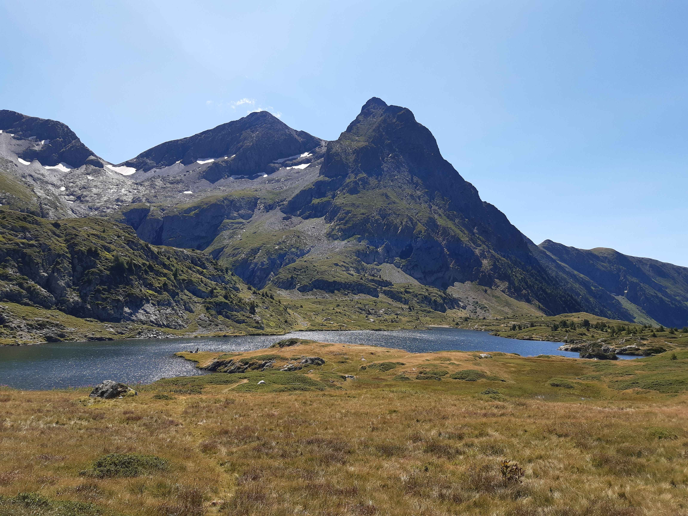

Description de l'itinéraire : parking au-dessus d'Ornon - bergerie de la Jasse - plateau des Lacs - pas de l'Envious - refuge de Taillefer
Distance : 12 km
Dénivelé positif : 800 m
Point le plus bas : 1390 m
Point le plus haut : 2104 m
Cotation en l'absence de neige : T2
Intérêt : 4/5
Date : 20/8/2024
Photos :
 De gauche à droite : les aiguilles d'Arves et le massif des Écrins De gauche à droite : les Rochères, le Taillefer et le rocher Culasson Le lac Noir et le lac des Agneaux Le lac Fourchu Le lac Fourchu, le Taillefer et le rocher Culasson